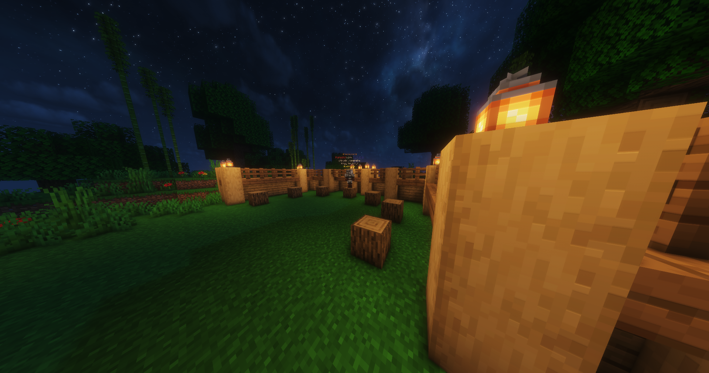

A szerverünk jelenálapotában már játszható képes,
és ha fel lépsz akkor már csapatható az egyedileg fejlesztett
ArenaCraft nevű Játékmód!
Az ArenaCraft egy RPG szerű Prison, ahol tudsz szörnyeket ölni,
ahoz hogy pénzt keress, és a pénzből tudjál venni különféle eszközöket a fejlődéshez.
És amellet hogy szörnyeket ölhetsz tudsz bányászni is hogy mégtöbb pénzed legyen.
--------------------------------------------------------------------------------------
Elérhetőségek:
discord/cubeempire
cubeempire@gmail.com
Hogyan csatlakozz fel?
Elindítod a Minecraftot és belépsz
"többjátékos mód" és "server felvétel"
majd beírod az ip címet és kész.
Onnantól kezdve ha rámész a szerverre,
akkor be tudsz csatlakozzni.